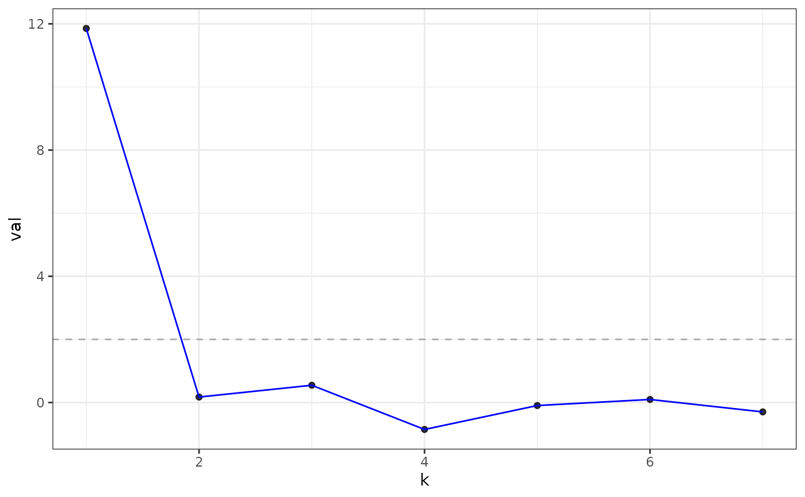

Plot cross-validated eigenvalues
Arguments
- x
An
eigcvobject created by a call toeigcv().- type
Specifies what to plot. Must be one of the following options:
"z-score", in which case the Z-statistic test scores are plotted for each value ofk(i.e. dimension of the eigenspace)."adjacency"in which case the cross-validated eigenvalues of the adjacency matrix are plotted for each value ofk."laplacian"in which case the cross-validated eigenvalues of the graph Laplacian matrix are plotted for each value ofk.
- threshold
Only used when
type == "z-score". Adds a horizontal line at the value ofthreshold, which should be a numeric of length one. Defaults to2.- ...
Ignored.
Examples
library(fastRG)
set.seed(27)
B <- matrix(0.1, 5, 5)
diag(B) <- 0.3
model <- sbm(
n = 200,
B = B,
expected_degree = 20,
poisson_edges = FALSE,
allow_self_loops = FALSE
)
A <- sample_sparse(model)
eigs<- eigcv(A, k_max = 7)
eigs
#> Estimated graph dimension: 1
#>
#> Number of bootstraps: 10
#> Edge splitting probabaility: 0.1
#> Significance level: 0.05
#>
#> ------------ Summary of Tests ------------
#> k z pvals padj
#> 1 11.85408886 1.024706e-32 1.024706e-32
#> 2 0.17249449 4.315244e-01 4.315244e-01
#> 3 0.54647185 2.923708e-01 2.923708e-01
#> 4 -0.85440917 8.035608e-01 8.035608e-01
#> 5 -0.09633109 5.383712e-01 5.383712e-01
#> 6 0.09554781 4.619399e-01 4.619399e-01
#> 7 -0.29814636 6.172043e-01 6.172043e-01
#>
plot(eigs, type = "z-score") # default

plot(eigs, type = "adjacency")
 plot(eigs, type = "laplacian")
plot(eigs, type = "laplacian")